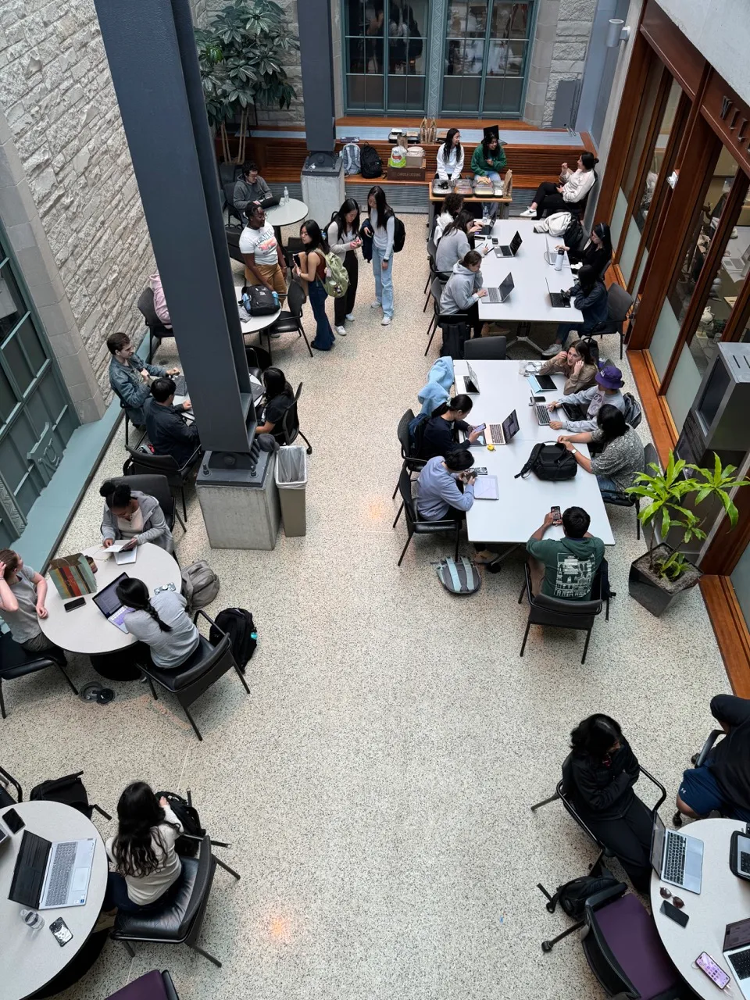

Leadership

I am currently the Academic Chair for the National Society of Black Engineers (NSBE) chapter at Northwestern University. In this role, I focus on strengthening academic support systems and fostering collaboration across engineering student organizations.
I have led initiatives to increase cross-organization engagement among NSBE, SHPE, SWE, and WIC. One of my key accomplishments was organizing a collaborative study session that brought together over 50 students, significantly improving academic support and promoting inter-club connection. Through targeted outreach and social media engagement, I increased NSBE meeting attendance by over 60 students, improving overall participation and strengthening community involvement within the chapter.

NSBE-led collaborative study session bringing together 50+ students across NSBE, SHPE, SWE, and WIC to strengthen academic support and cross-organization engagement.
These initiatives have helped create a more connected and supportive engineering community at Northwestern, while strengthening my skills in leadership, communication, and organizational development.